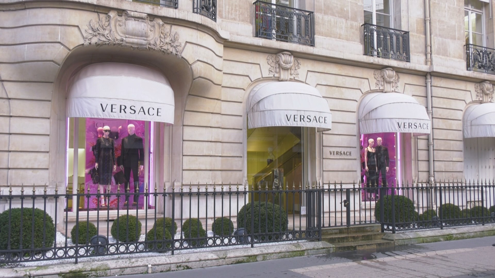
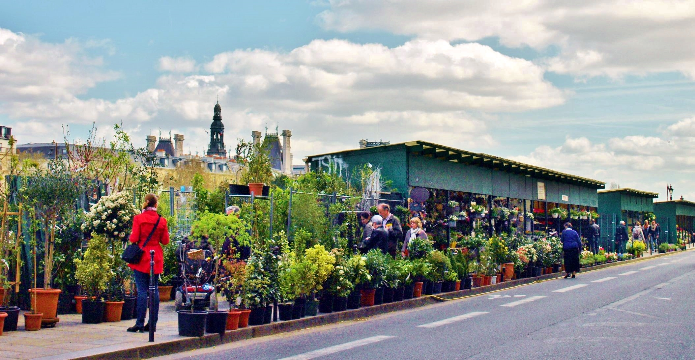

Calles comerciales de lujo
Si lo que buscáis son calles comerciales con precios más asequibles, recorrer el Barrio Latino puede ser una buena idea. El Boulevard Saint-Germain, el Boulevard Saint-Michelle y sus calles aledañas son un buen punto de partida.
Campos Elíseos: El boulevard más famoso de París es a su vez una de las calles comerciales más importantes. Es aquí donde se encuentra la tienda insignia de Louis Vuitton, a la que se acercan cientos de clientes y miles de curiosos cada día, por lo que es probable que haya cola para entrar. La gran mayoría de los clientes son asiáticos adinerados.
Avenue Montaigne: Esta pequeña calle reúne las tiendas más lujosas y caras de París. Conviene recorrerla aunque sólo sea por ver los extraños diseños que pueblan sus escaparates.
Rue Royale: Esta calle comunica la Plaza de la Concordia con la Madeleine. A mitad de la calle la Rue Saint-Honoré la atraviesa perpendicularmente. En Saint-Honoré se encuentran tiendas como Hermès, Prada o Yves Saint Laurent. Continuando al este por Saint-Honoré llegaréis a la Plaza Vendome.
|

Mercados
Mercado de la Île de la Cité: Situado en la Place Louis Lépine y abierto durante todo el año, este mercado es uno de los más famosos de París. Entre semana vende flores y los domingos se complementa con pájaros.
Mercado de las pulgas: El "Marché aux Puces de Saint Ouen" es un gran mercado en el que es posible encontrar desde ropa hasta antigüedades. Los días más importantes son los sábados y los domingos. La mejor forma de llegar es en metro, parada Porte de Clignancourt.
|

Volver al principio
| |